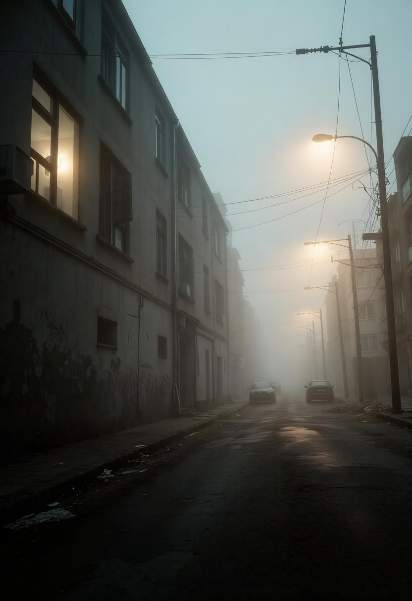

Море бесконечно. Найти остров сложно. Он появляется редко, и не каждый его видит. Но если ты его увидел — он существует.
Как попасть: если рискнуть и построить плот (или просто отчаянно поплыть), можно достичь берега.
Что там делать: на острове можно взять ресурсы (их много), оглядеться, услышать голоса. А потом уплыть обратно в контейнер. Или остаться. Выживать 90 дней не обязательно.
Море бесконечно. Найти остров сложно. Он появляется редко, и не каждый его видит. Но если ты его увидел — он существует.
Как попасть: если рискнуть и построить плот (или просто отчаянно поплыть), можно достичь берега.
Что там делать: на острове можно взять ресурсы (их много), оглядеться, услышать голоса. А потом уплыть обратно в контейнер. Или остаться. Выживать 90 дней не обязательно.
С острова можно уплыть обратно на плоту. Те, кто остаётся… остаются. Никто не знает, что с ними происходит. M.E.G. не может подтвердить или опровергнуть существование острова. Выживших, которые доплыли до него и вернулись, почти нет.
